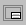

 Click the View Title Block button to display or hide the Title Block. This button functions as a "toggle." If the Title Block is currently visible, clicking the button will hide it. If the Title Block is hidden, clicking the button will display it.
The View Title Block button is located on the Display Toolbar. It can also be accessed from the View menu.
If your computer has a low-resolution monitor, you may find that the Title Block covers up the lower edge of the drawing grid. In this case, you might need to hide the Title Block to create or edit your .